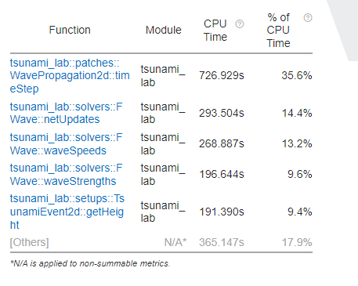

9. Weekly Report 8
9.1. Migration to ARA
The migration from LeChuck to the ARA cluster went without any major problems.
The following batch script was used to simulate the 2010 tsunami in Chile (and thus prove the functionality of the solver):
#!/bin/bash
#SBATCH --job-name=tsunami
#SBATCH --output=tsunami.out
#SBATCH --error=tsunami.err
#SBATCH --partition=s_hadoop
#SBATCH --nodes=1
#SBATCH --ntasks=1
#SBATCH --time=10:00:00
#SBATCH --cpus-per-task=72
# Load modules
module load tools/python/3.8
module load compiler/gcc/11.2.0
python3.8 -m pip install --user scons
date
cd /beegfs/ri26lit/tsunami_lab
scons
./build/tsunami_lab chile_10000m.json
with the corresponding config file chile_10000m.json:
{
"dimension": 2,
"nx": 350,
"ny": 295,
"xLen": 3500000.0,
"yLen": 2950000.0,
"bathymetryFileName": "chile_gebco20_usgs_250m_bath_fixed.nc",
"displacementsFileName": "chile_gebco20_usgs_250m_displ_fixed.nc",
"epicenterOffsetX": -3000000.0,
"epicenterOffsetY": -1450000.0,
"simTime": 44300,
"boundaryCond": "OO",
"setup": "TsunamiEvent"
"checkPoints": 2
}
The visualization of the 2010 chile tsunami event seems to work as intended:
9.1.1. Comparison of ARA vs. home system
To show the difference in calculation time between the ara cluster and our own system, the chile tsunami event was simulated with a grid size of 10000m.
We decided not to use the time per cell and iteration, but the time of the entire simulation (file I/O and setup time excluded).
home system: \(\text{AMD Ryzen}^ \text{TM}\) 7 4700U @ 2.00GHz (RAM: 24.00GB @ 3200MHz)
simulation time / #time steps / #step: 43439 / 2450 / 98
simulation time / #time steps / #step: 43882.2 / 2475 / 99
Simulation Took: 18.9094s
./out/chile_10000m.nc
finished time loop
freeing memory
finished, exiting
ARA-Cluster: \(\text{Skylake Intel}^ \text{®}\) \(\text{Xeon}^ \text{®}\) Gold 6140 @ 2.30GHz (RAM: 192GB)
simulation time / #time steps / #step: 43439 / 2450 / 98
simulation time / #time steps / #step: 43882.2 / 2475 / 99
Simulation Took: 13.1988s
./out/chile_10000m.nc
finished time loop
freeing memory
finished, exiting
As expected (since the hardware on ARA is better), the ARA cluster seems to be roughly 43% faster than our home system. That’s not a huge difference, especially when you consider that our home system is a five year old laptop.
9.2. Interchangeability of compilers
Implemented compiler interchangeability in sconstruct by adding a new variable CXX with default value g++. The Compiler can be set just like the mode with scons CXX=icpc.
In addition, the environment env has been extended by the addition of ENV=os.environ.
The default flag for g++ and icpc is -O2.
vars.AddVariables(
EnumVariable( 'CXX',
'compiler options: g++, icpc',
'g++',
allowed_values=('g++', 'icpc')
)
)
# ...
# create environment
env = Environment( ENV=os.environ, variables = vars )
print(f"use the {env['CXX']} compiler")
# ...
# set optimization mode
if 'debug' in env['mode']:
env.Append( CXXFLAGS = [ '-O0' ] )
else:
if 'g++' in env['CXX']:
env.Append( CXXFLAGS = [ '-O2' ] )
elif 'icpc' in env['CXX']:
env.Append( CXXFLAGS = [ '-O2' ] )
If you compare the time required by both compilers, the g++ compiler is faster than icpc, but the code itself runs faster if it is generated with icpc.
9.2.1. Comparison of different optimization switches
The comparison of the two compilers was conducted by the tsunami event in Chile with a grid size of 10000m.
corresponding chile_10000m.json config file:
{
"dimension": 2,
"nx": 350,
"ny": 295,
"xLen": 3500000.0,
"yLen": 2950000.0,
"bathymetryFileName": "chile_gebco20_usgs_250m_bath_fixed.nc",
"displacementsFileName": "chile_gebco20_usgs_250m_displ_fixed.nc",
"epicenterOffsetX": -3000000.0,
"epicenterOffsetY": -1450000.0,
"simTime": 44300,
"boundaryCond": "OO",
"setup": "TsunamiEvent"
"checkPoints": 2
}
We used the time that the simulation took (in seconds), excluding file I/O and setup time.
Configuration |
g++ |
icpc |
|---|---|---|
O2 |
13.1988s |
12.6979s |
Ofast |
11.1114s |
13.11s |
fast |
10.9384s |
In direct comparison with the O2 flag, the icpc compiler generated slightly faster code. Unexpectedly, with the ofast flag, the g++ compiler generated faster code compared to the icpc compiler. Since only the icpc compiler could be executed with the fast flag, we have no comparison with the g++ compiler. It could be assumed that the g++ compiler would have become even faster, since ‘fast’ is a combination of ‘Ofast’, ‘ipo’, ‘static’ and ‘xHost’.
Based on these results, we decided not to set our default flag for g++ to -Ofast since it contains the O3 flag,
which is recommended when working with loops involving intensive floating point calculations but generates unstable code.
The default flag for icpc was set to fast.
9.2.2. Optimization Report
Added an option for compiler optimization reports in Sconstruct.
vars.AddVariables(
EnumVariable( 'report',
'options: 0 to 5',
'0',
allowed_values=('0', '1', '2', '3', '4', '5')
)
)
# ...
if 'icpc' in env['CXX'] and '0' not in env['report']:
env.Append( CXXFLAGS = [ '-qopt-report=' + env['report'] ] )
According to the report, the Roe-solver can be inlined, but not the FWave-solver or Wavepropagation2d, as this would exceed the -inline-max-size value.
Furthermore, the compiler is not able to vectorize our loops (getbathymetry and getheight) because there are too many vector dependencies.
9.3. Instrumentation and Perfmance Counters
To gain additional insight into our code and its optimization, we used Intel Vtune Profile. Once again, the tsunami simulation of Chile with a grid size of 10000m was used.
{
"dimension": 2,
"nx": 350,
"ny": 295,
"xLen": 3500000.0,
"yLen": 2950000.0,
"bathymetryFileName": "chile_gebco20_usgs_250m_bath_fixed.nc",
"displacementsFileName": "chile_gebco20_usgs_250m_displ_fixed.nc",
"epicenterOffsetX": -3000000.0,
"epicenterOffsetY": -1450000.0,
"simTime": 44300,
"boundaryCond": "OO",
"setup": "TsunamiEvent"
"checkPoints": 2
}
First, we looked into the Hotspots with the following batch script:
#!/bin/bash
#SBATCH --job-name=tsunami
#SBATCH --output=tsunami.out
#SBATCH --error=tsunami.err
#SBATCH --partition=s_hadoop
#SBATCH --nodes=1
#SBATCH --ntasks=1
#SBATCH --time=10:00:00
#SBATCH --cpus-per-task=72
# Load necessary modules
module load tools/python/3.8
module load compiler/gcc/11.2.0
module load compiler/intel/2020-Update2
python3.8 -m pip install --user scons
date
cd /beegfs/ri26lit/tsunami_lab
scons CXX=icpc
vtune -collect hotspots ./build/tsunami_lab chile_10000m.json
And then we looked into Threading (same code, only last line has changed):
#!/bin/bash
#SBATCH --job-name=tsunami
#SBATCH --output=tsunami.out
#SBATCH --error=tsunami.err
#SBATCH --partition=s_hadoop
#SBATCH --nodes=1
#SBATCH --ntasks=1
#SBATCH --time=10:00:00
#SBATCH --cpus-per-task=72
# Load necessary modules
module load tools/python/3.8
module load compiler/gcc/11.2.0
module load compiler/intel/2020-Update2
python3.8 -m pip install --user scons
date
cd /beegfs/ri26lit/tsunami_lab
scons CXX=icpc
vtune -collect threading ./build/tsunami_lab chile_10000m.json
The results in the Intel Vtune Profiler GUI for chile_10000m showed that a lot of CPU time is used for the nc_get_var_float in our netCDF reader.
We already knew that we might have overused nc_get_var_float, but we did not expect it to be so dominant.
{kind=link}
Suspecting that there were other obvious bottlenecks, we ran chile again, but this time with a grid size of 1000m.
As expected, this time Wavepropagation2d clearly stood out with about 35% of the CPU time. NetUpdates and WaveSpeeds required roughly the same amount of CPU time as in the simulation above and therefore took second and third place.
{kind=link}
9.4. Individual Phase
For our individual phase, we would like to try to optimize our solver by dividing our mesh into several smaller meshes. These smaller meshes can be simulated simultaneously on different cores to calculate the net updates faster. The challenge is to update the intersections of these smaller meshes at each time step.
We hope that by parallelizing our computations, we can gain a lot of computing power. We also hope to deepen our understanding of good parallelization practices.
As a second option, we would like to improve our solver by implementing adaptive mesh refinement to improve the resolution in areas of interest. For this we can use the paper Adaptive Mesh Refinement Using Wave-Propagation Algorithms for Hyperbolic Systems by Marsha J. Berger and Randall J. LeVeque.